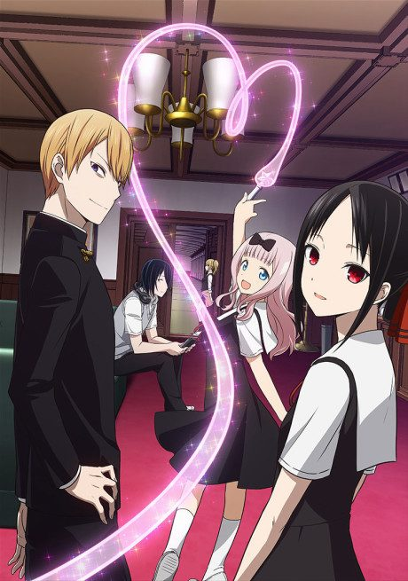
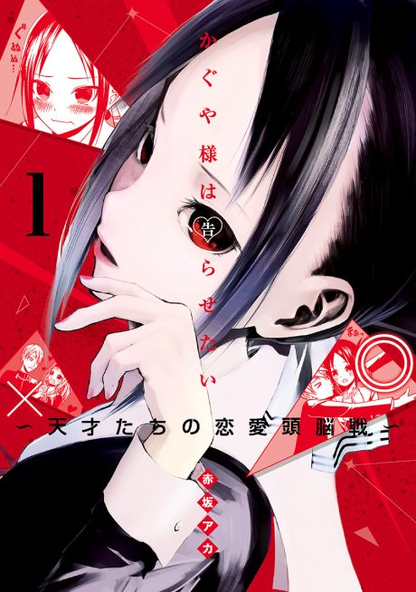

Anime
MangaEpisodes numbered continuously as in Wikipedia's overall 'Story' column: Seasons 1-3 are 1-37, the First Kiss film's four TV parts are 38-41, and the Stairway to Adulthood special is 42-43.
At elite Shuchiin Academy, student council president Miyuki Shirogane and vice-president Kaguya Shinomiya like each other, but each is too proud to confess first and schemes to make the other do it.
The second term brings new rivals, a student council election, and more failed schemes.
As the school culture festival nears, Shirogane makes plans to finally settle things with Kaguya.
After the culture festival, Kaguya and Shirogane have to figure out what their relationship actually is.
A special that looks back on the early days of Kaguya and Shirogane's relationship.